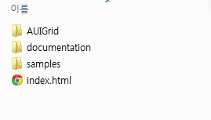

AUIGrid 는 순수 자바스크립트, HTML, CSS 로 제작된 클라이언트 사이드 데이터그리드입니다. 따라서 WAS 에 따로 특별한 설치는 필요 없습니다.
WAS 로 톰캣, Jeus, Resin, IIS, WebLogic 등 어떤 것을 사용해도 무관합니다.
웹 서버에 FTP 로 업로드하여 주십시오. 이것으로 모든 설치는 완료됩니다.
http://www.auisoft.net 의 다운로드를 통해 다운로드를 받아 압축을 해제하면 다음과 같은 폴더구조가 보입니다.
|
 |
이 파일 그대로 FTP 를 통해 원하는 웹 서버에 올려주십시오.
디렉토리 설명
l AUIGrid : AUIGrid 라이브러리와 라이선스가 있는 디렉토리 입니다.
실제 프로젝트에서 AUIGrid 를 사용하고자 할 때 AUIGrid 디렉토리 내용만 해당 프로젝트의 적당한 디렉토리에 복사한 후 사용하시면 됩니다.
l documentation : AUIGrid 설명 문서가 들어 있습니다.
Indext.html 파일을 브라우저에서 실행시켜 보십시오.
l samples : AUIGrid 샘플 파일이 들어 있습니다. 데모 및 샘플을 보다가 어떻게 작성되었는지 소스코드가 궁금할 때 찾아서 참고하십시오.
l index.html : 샘플을 실행시키는 index 파일입니다.
만약, 위 디렉토리를 그대로 서버에 올렸다면 브라우저로 해당 서버 URL 로 접속하면 샘플을 확인할 수 있습니다.
로컬(Local) 실행(내 컴퓨터 실행) 관련 설명
- AUIGrid Local 실행을 위해서는 SaaS/OEM 라이선스가 필요합니다. 해당 라이선스가 필요한 분은 게시판이나 이메일, 전화 주십시오.
- 기본적으로 웹서버 없이 로컬에서 AUIGrid 를 실행시키는 것은 라이선스 정책 상 불가능합니다. 꼭 웹서버에 올려 개발 및 샘플을 구동하십시오.